A / RGB314×206 / generated, unselected
CLASSIFIED AS COMPOST.
deathScreens:biology_park/classified_as_compostSealed organic-waste bale, stopped conveyor, completed indicator and disposal receipt. Processing is finished.
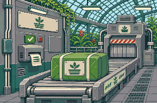
Five generated candidates · Art Director selection pending
Batch7 is complete and approved. All109 selected public-art hashes match their registered sources. These five new death illustrations remain generated and unselected, with null production paths.
Native314×206 opaque RGB, popup628×412 exact2×, inspection1256×824 exact4×. Existing64-color palette, no dithering. Titles, subtitles, prose, separators, controls and the frozen gameplay backdrop remain separate from the image.
deathScreens:biology_park/classified_as_compostSealed organic-waste bale, stopped conveyor, completed indicator and disposal receipt. Processing is finished.

deathScreens:biology_park/new_arrivalFresh nursery mound, standby hopper, arms at rest and a cheerful sprout marker beneath the artificial sun.
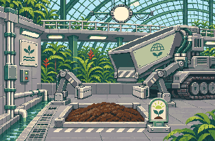
deathScreens:biology_park/personal_growthAn anonymous person-sized mass made entirely of roots, leaves and flowers; the cultivation lamp reports success.
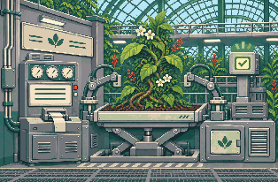
deathScreens:biology_park/reclassifiedLevel growing tray, formal checkmark, closed waste hatch and retracted handling arms in an enclosed processing station.

deathScreens:biology_park/site_improvementRoots completely obstruct the narrow service duct while the overhead translator issues another routine requisition.

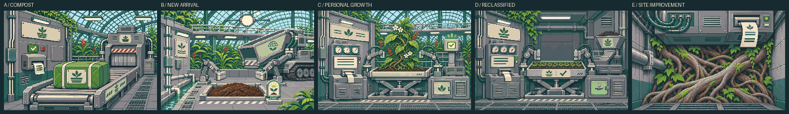
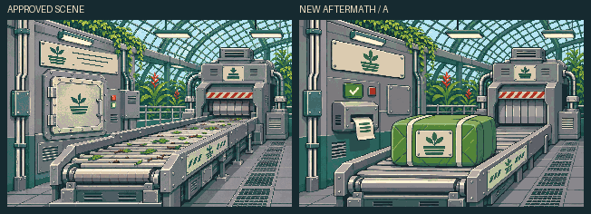
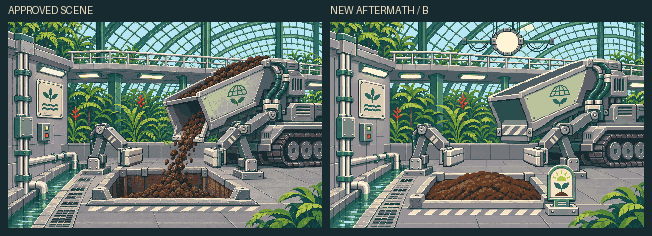
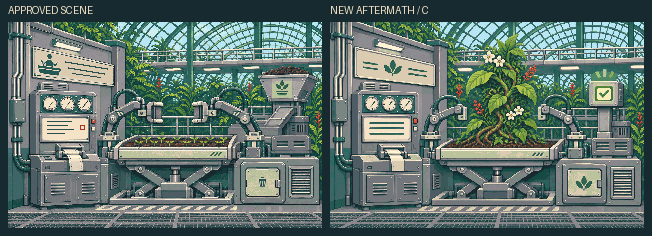
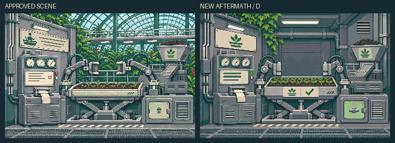
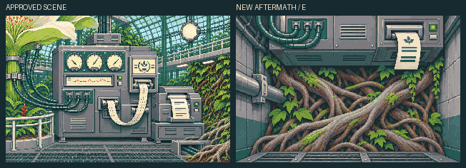
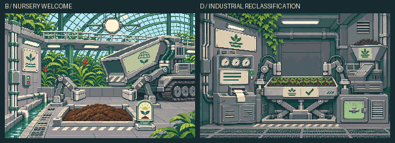
Rendered with the unchanged pinned game popup renderer, configuration and bitmap fonts. Each candidate occupies the exact628×412 art area. Canonical title, subtitle and narrative remain separate. The backdrop uses the related approved scene as a frozen review stand-in with the existing10px block/0.35 darkening effect. These are art-review compositions; candidate bindings do not select or integrate artwork.
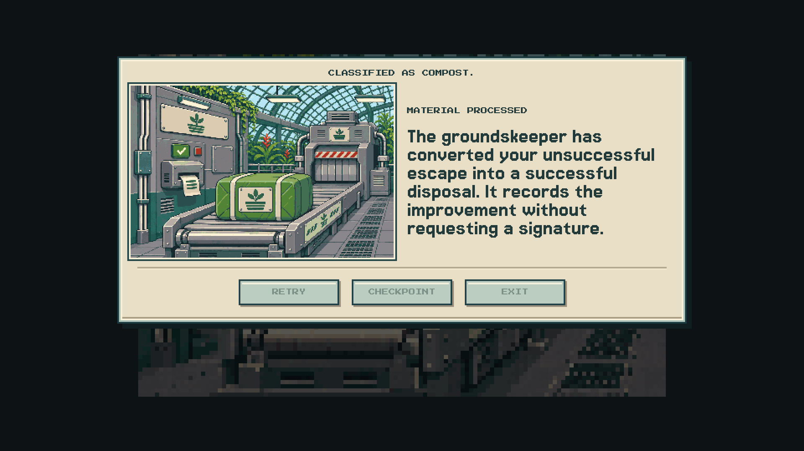
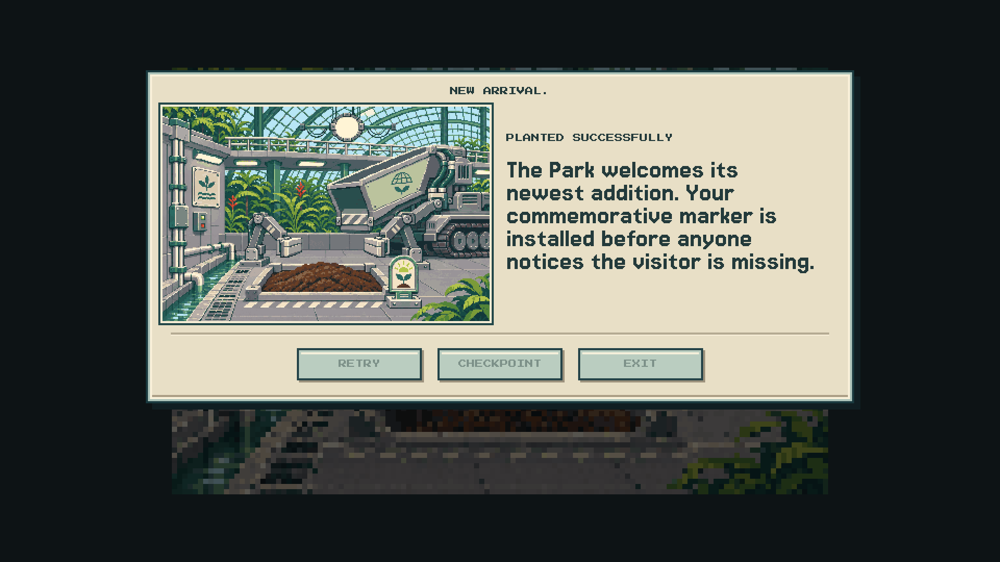
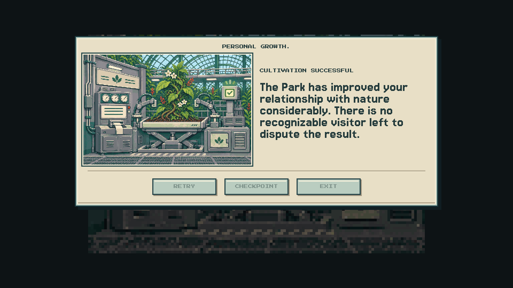
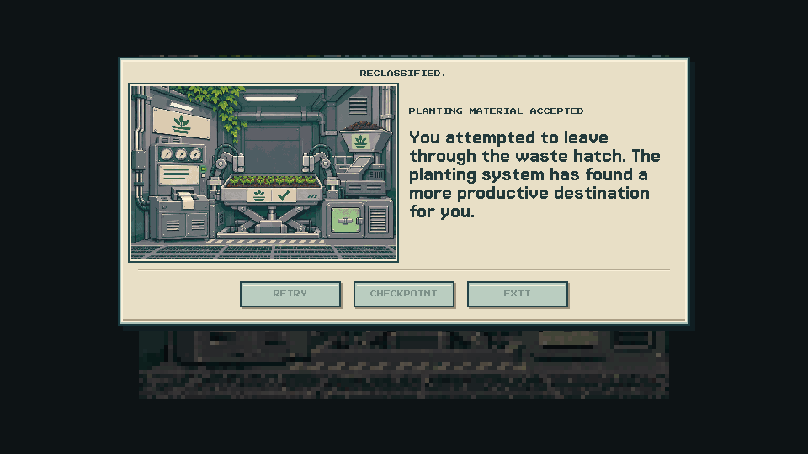
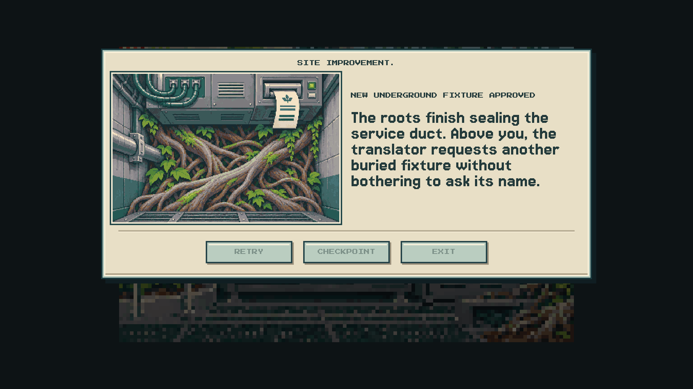
Original source generations, exact prompts and approved-reference provenance are preserved. All prior artwork is unchanged. Technical QA does not constitute owner approval. No gameplay integration, death-copy changes or new death mechanics.